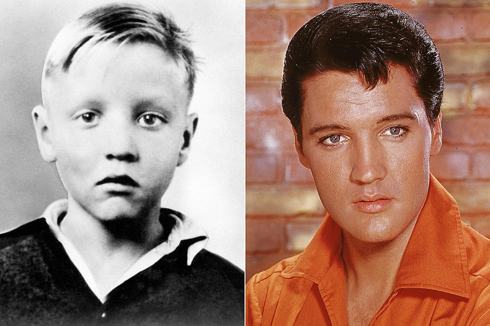
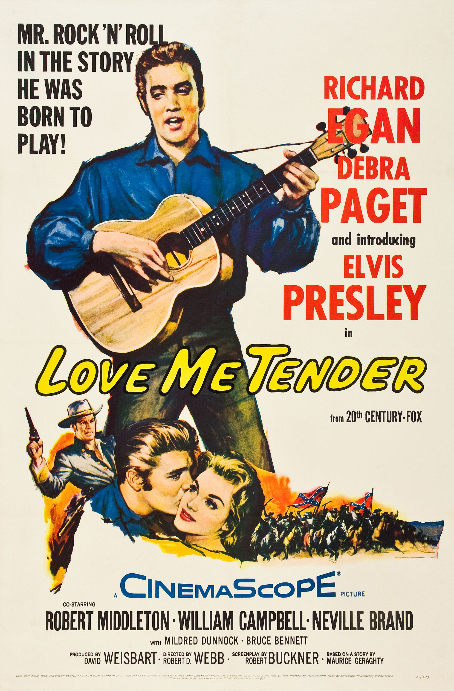

Elvis Aaron Presley nasceu em 8 de janeiro de 1935, em Tupelo, Mississippi, filho de Vernon Elvis e Gladys Love Presley (nascida Smith) em uma casa de dois cômodos que seu pai construiu para a ocasião.
Nascido em Tupelo, Mississippi, nos Estados Unidos, mudou-se com sua família para Memphis, Tennessee, quando tinha 13 anos. Sua carreira musical começou em 1954, gravando na Sun Records com o produtor Sam Phillips, que queria levar o som da música afro-americana para um público mais amplo. Acompanhado pelo guitarrista Scotty Moore e pelo baixista Bill Black, foi um pioneiro do rockabilly, uma fusão de música country e rhythm and blues. Em 1955, o baterista D. J. Fontana juntou-se ao time e completou o quarteto clássico do cantor, os Jordanaires, e a gravadora RCA Victor adquiriu seu contrato em um acordo arranjado pelo Coronel Tom Parker, que viria a empresariá-lo por mais de duas décadas. O seu primeiro single com a RCA, "Heartbreak Hotel", foi lançado em janeiro de 1956 e se tornou um sucesso que alcançou o primeiro lugar nos Estados Unidos.
Elvis Aaron Presley nasceu em 8 de janeiro de 1935, em Tupelo, Mississippi, filho de Vernon Elvis e Gladys Love Presley (nascida Smith) em uma casa de dois cômodos que seu pai construiu para a ocasião.
Está é a casa onde Elvis Presley nasceu em Mississippi.
Presley, que não recebeu nenhum treinamento formal de música e não sabia ler música, estudou e tocou por ouvido. O cantor também frequentava lojas de discos que forneciam jukeboxes e cabines de escuta aos clientes. Conhecia todas as canções de Hank Snow, e adorava discos de outros cantores country como Roy Acuff, Ernest Tubb, Ted Daffan, Jimmie Rodgers, Jimmie Davis e Bob Wills. O cantor gospel Jake Hess, um de seus artistas favoritos, foi uma influência significativa em seu estilo de cantar baladas. Era um membro regular da audiência no All-Night Singings no centro da cidade, onde muitos dos grupos gospel brancos que se apresentavam no local refletiam a influência da música spiritual afro-americana. Ele adorava músicas da cantora gospel Sister Rosetta Tharpe. B.B. King lembrou que o conheceu antes de ser popular quando ambos costumavam frequentar a Beale Street. Quando se formou no colegial em junho de 1953, já havia escolhido a música como seu futuro.
Durante seu primeiro ano, começou a se destacar mais entre seus colegas, em grande parte devido à sua aparência: deixou crescer as costeletas e penteou o cabelo com óleo de rosa e vaselina.
Presley em uma fotografia publicitária para o filme Jailhouse Rock de 1957
Em novembro de 1956, Presley fez sua estreia no cinema em Love Me Tender. Convocado para o serviço militar em 1958, relançou sua carreira musical dois anos depois, com alguns de seus trabalhos mais bem sucedidos comercialmente. No entanto, realizou poucos concertos, e orientado por Parker, dedicou grande parte da década de 1960 fazendo filmes e trilhas sonoras, a maioria dos quais não foram bem observados pela crítica. Em 1968, após uma pausa de sete anos sem se apresentar ao vivo, ele retornou ao palco no aclamado especial televisivo Elvis, o qual levou a uma estendida residência em Las Vegas, e uma série de turnês altamente lucrativas. Em 1973, tornou-se o primeiro artista solo a ter um show transmitido ao redor do mundo, Aloha from Hawaii.
Sua vida polêmica, cheia de talentos e excessos, entrou para a história. Elvis Presley cativou nos anos 1960 com a sua música e a sua forma particular de a abordar e dançar, tornando-se um ícone da cultura urbana do século XX.
O talento e a personalidade avassaladora de Elvis influenciaram a vida musical de outros grandes nomes como John Lennon e Freddie Mercury.
Suas interpretações energéticas das canções e seu estilo de performance sexualmente provocante, combinados com uma mistura singularmente potente de influências além da barreira da cor durante uma era transformadora nas relações raciais, fizeram-no enormemente popular e controverso. Ele é o artista solo mais vendido na história da música. Também obteve sucesso comercial em muitos gêneros, incluindo pop, country, blues e gospel. Elvis ganhou três Grammys competitivos, recebeu o Grammy Lifetime Achievement Award aos 36 anos, sendo incluído em vários Halls da Fama. O cantor detém vários recordes, incluindo os álbuns de ouro e platina mais certificados pela RIAA, o maior número de álbuns na Billboard 200, os mais números um de um artista solo no UK Albums Chart e o maior número de singles número um no UK Singles Chart.
O rei do rock sofria com problemas de saúde, mas surpreendeu o mundo pela forma abrupta como morreu.
Em 26 de junho de 1977, Elvis Presley fez a última apresentação da carreira.
Há 45 anos, Elvis Presley subiu ao palco pela última vez. Como relembra o Far Out Magazine, em 26 de junho de 1977 o músico fez um show para 18 mil fãs no Market Square Arena, em Indianápolis, Estados Unidos.
Presley, obviamente acima do peso e visivelmente confuso, se apresentou até o fim com classe inata e sua voz maravilhosa, deixando uma multidão em êxtase e adoração.
Nos dias seguintes a apresentação, retornou à mansão Graceland, em Memphis, onde seus últimos momentos foram acompanhados por funcionários da residência e, em especial, sua namorada Ginger Alden.
Elvis Presley morreu em 16 de agosto de 1977, aos 42 anos, em decorrência de um ataque cardíaco. Em 2001, o Market Square Arena foi demolido e transformado em um estacionamento. Apesar disso, há um espaço no local que serve como memorial.